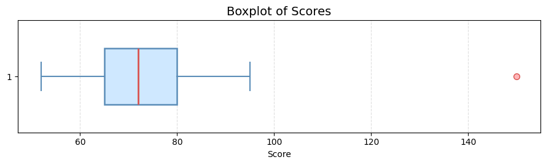

Chapter 03
盒鬚圖與相關性分析
使用盒鬚圖檢查資料分布與離群值，並分析變數之間的相關性
本章學習目標
- 理解盒鬚圖的基本結構與統計意義。
- 了解四分位數與四分位距 IQR。
- 能使用 IQR 方法判斷可能的離群值。
- 能使用 Python 繪製並美化盒鬚圖。
1. 盒鬚圖的核心觀念
盒鬚圖（Boxplot）是一種用來呈現資料分布的統計圖表，可以快速觀察資料的中位數、 四分位數、分散程度與可能的離群值。
- Q1：第一四分位數，約有 25% 的資料小於或等於此值。
- Q2：第二四分位數，也就是中位數。
- Q3：第三四分位數，約有 75% 的資料小於或等於此值。
- IQR：四分位距，計算方式為 Q3 − Q1。
盒子的左側與右側分別代表 Q1 與 Q3，盒子中的線代表中位數，
鬚線外單獨顯示的點通常表示可能的離群值。
2. 使用 IQR 判斷離群值
常見的離群值判斷方式，是利用四分位距建立上下界：
IQR = Q3 − Q1
下界 = Q1 − 1.5 × IQR
上界 = Q3 + 1.5 × IQR
下界 = Q1 − 1.5 × IQR
上界 = Q3 + 1.5 × IQR
若某個數值小於下界，或大於上界，就可以將其視為一個可能的離群值。
import numpy as np
scores = [
52, 60, 63, 65, 68, 70, 72,
75, 78, 80, 85, 95, 150
]
q1 = np.percentile(scores, 25)
q3 = np.percentile(scores, 75)
iqr = q3 - q1
lower_bound = q1 - 1.5 * iqr
upper_bound = q3 + 1.5 * iqr
outliers = [
score
for score in scores
if score < lower_bound or score > upper_bound
]
print("Q1：", q1)
print("Q3：", q3)
print("IQR：", iqr)
print("下界：", lower_bound)
print("上界：", upper_bound)
print("離群值：", outliers)
離群值不一定是錯誤資料。它可能是真實但少見的觀察值，因此刪除前應先了解資料背景。
3. 使用 Python 繪製盒鬚圖
以下使用 Matplotlib 繪製水平盒鬚圖，並調整畫布比例、色彩、線條與離群值樣式。
import matplotlib.pyplot as plt
# 建立分數資料，其中 150 可能會被判斷為離群值
scores = [
52, 60, 63, 65, 68, 70, 72,
75, 78, 80, 85, 95, 150
]
# 建立寬而扁的長方形畫布
# 第一個數字代表寬度，第二個數字代表高度
plt.figure(figsize=(9, 2.8))
# 繪製盒鬚圖
plt.boxplot(
scores,
# 將盒鬚圖改為水平方向
vert=False,
# 允許設定盒子的填充顏色
patch_artist=True,
# 設定盒子的寬度
widths=0.5,
# 設定盒子的填充色、邊框色與線條粗細
boxprops=dict(
facecolor="#CFE8FF",
edgecolor="#5B8DB8",
linewidth=1.8
),
# 設定中位數線條的顏色與粗細
medianprops=dict(
color="#D9534F",
linewidth=2
),
# 設定鬚線的顏色與粗細
whiskerprops=dict(
color="#5B8DB8",
linewidth=1.5
),
# 設定鬚線末端短線的顏色與粗細
capprops=dict(
color="#5B8DB8",
linewidth=1.5
),
# 設定離群值的形狀、顏色與大小
flierprops=dict(
marker="o",
markerfacecolor="#FFB6B9",
markeredgecolor="#D9534F",
markersize=7
)
)
# 設定圖表標題
plt.title("Boxplot of Scores", fontsize=14)
# 設定 X 軸名稱
plt.xlabel("Score")
# 加入 X 軸方向的虛線格線，幫助讀者判讀數值位置
plt.grid(
axis="x",
linestyle="--",
alpha=0.4
)
# 自動調整圖表邊界，避免文字被裁切
plt.tight_layout()
# 顯示圖表
plt.show()執行結果

4. 圖表解讀
圖中的淺藍色盒子代表 Q1 到 Q3，也就是中間 50% 的資料範圍； 盒子中央的紅色線條代表中位數。
左右兩側的鬚線會延伸至仍位於正常範圍內的最小值與最大值。 位於右側且與盒子分離的粉紅色圓點，代表數值 150， 因為它超過 IQR 方法所計算出的上界，因此被標示為可能的離群值。
盒鬚圖能幫助我們快速了解資料的中心位置、分散程度、偏斜方向與離群值，
但無法完整呈現資料的分布形狀，因此也可以搭配直方圖一起分析。
5. 提升圖表美觀與可視性
Matplotlib 的預設圖表可以透過調整畫布尺寸、圖表方向、填充顏色、 線條粗細、字體大小、格線與離群值樣式，提升圖表的美觀程度與可讀性。
例如，單一組資料的盒鬚圖通常適合使用水平排列， 並採用較寬、較低的長方形畫布；淺色填充可以減少視覺負擔， 而中位數與離群值則可使用較醒目的顏色，讓重要資訊更容易辨識。
圖表美化不只是改變顏色，而是要讓讀者更快找到重點。
良好的圖表設計應兼顧美觀、清楚與統計資訊的正確呈現。
練習題
- 請計算資料中的 Q1、Q3 與 IQR。
- 請利用 IQR 方法找出資料中的可能離群值。
- 請使用 Matplotlib 繪製一張水平盒鬚圖。
- 請將盒子的顏色改成其他淺色，並調整中位數線條。
- 請說明為什麼找到離群值後不能直接刪除。
本章重點整理
- 盒鬚圖可呈現中位數、四分位數、分散程度與可能的離群值。
- IQR 等於 Q3 減去 Q1。
- IQR 方法利用上下界判斷可能的離群值。
- 離群值不一定是錯誤，刪除前應先確認形成原因。
- 適當調整畫布、配色、線條與格線，可以提升圖表可讀性。